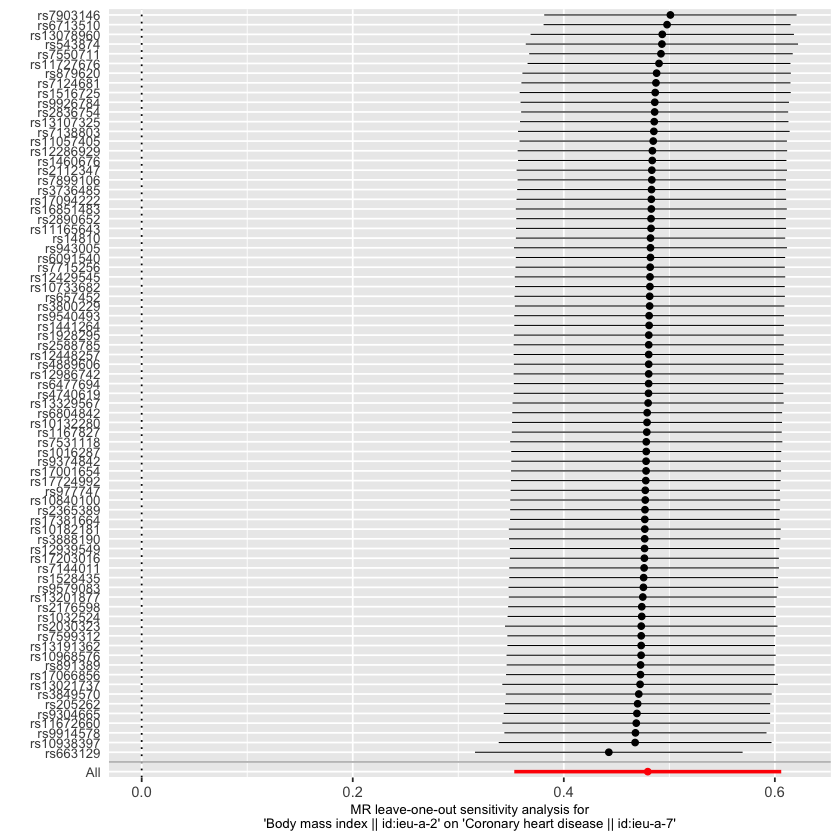

One of the fundamental goals of science is to determine whether one variable causes another.
In medicine, epidemiology, genetics, economics, and social sciences, researchers constantly observe relationships between variables. Observing a relationship, however, is not the same as proving a causal effect.
Consider a few familiar examples:
Individuals with a higher body mass index (BMI) tend to have a higher risk of coronary heart disease.
Smokers are more likely to develop lung cancer.
Elevated C-reactive protein (CRP) levels are associated with hypertension.
Individuals who exercise regularly tend to live longer.
These observations are informative, but none of them establishes causality on its own.
Understanding the distinction between correlation and causation is one of the most important ideas in statistics and epidemiology. It is also the motivation behind Mendelian Randomization (MR), an approach that uses genetic variants to investigate causal relationships.
What you’ll learn in this series
How to distinguish correlation from causation
Why observational associations can be misleading
What confounding and reverse causation mean
How Mendelian Randomization uses genetic variants as instruments
When MR is a useful tool for causal inference
How to run a complete two-sample MR analysis in R, from instrument selection to sensitivity analysis
Who this is for. Researchers and students who want an accessible, code-first introduction to Mendelian Randomization with a genetics focus. Familiarity with basic statistics and epidemiology is helpful but not required.
Why MR matters. Mendelian Randomization helps researchers address causal questions when randomized controlled trials are not feasible. It uses the natural randomization of genetic inheritance to infer whether an exposure may have a causal effect on an outcome.
1 Part 1 — Correlation, Causation, and Why We Need MR
1.1 What Is Correlation?
Correlation describes the extent to which two variables vary together.
When one variable increases and another tends to increase as well, the variables have a positive correlation. When one increases while the other decreases, they have a negative correlation.
Correlation is most commonly measured with the Pearson correlation coefficient, \(r\), where \(-1 \le r \le 1\).
Correlation
Interpretation
\(r = 1\)
Perfect positive relationship
\(r = 0\)
No linear relationship
\(r = -1\)
Perfect negative relationship
Height and weight, for example, are usually positively correlated, since taller individuals generally weigh more than shorter individuals. But a correlation coefficient never tells us whether one variable causes the other.
1.2 The Central Question
Suppose researchers observe that individuals with elevated CRP levels tend to have higher blood pressure. This raises an obvious question:
Does CRP cause high blood pressure?
Several explanations are equally consistent with the data:
CRP causes high blood pressure.
High blood pressure causes elevated CRP.
Some other factor influences both CRP and blood pressure.
The relationship is partly causal and partly confounded.
Observational data alone cannot distinguish between these possibilities.
1.3 Correlation Does Not Imply Causation
Correlation does not imply causation.
Two variables can be strongly correlated even when neither directly causes the other. There are two classic reasons this happens: reverse causation and confounding.
1.3.1 Reverse Causation
Reverse causation occurs when the true direction of the relationship is the opposite of what we initially assume. Researchers may observe
\[\text{Biomarker} \rightarrow \text{Disease}\]
and conclude that the biomarker causes disease, when the true relationship runs the other way:
\[\text{Disease} \rightarrow \text{Biomarker}\]
Elevated inflammatory markers, for instance, are often observed in people who already have disease — the disease raised the biomarker, not the other way around. Reverse causation is especially problematic in observational studies, because measurements are often taken after disease processes have already begun.
1.3.2 Confounding
Confounding occurs when a third variable influences both the exposure and the outcome. For example, general health-consciousness influences both exercise habits and diet quality. A researcher might observe a strong association between exercise and diet quality, but the relationship is largely explained by an underlying tendency toward healthy behavior overall, not a direct causal link between the two.
A classic example: ice cream and drowning. Across a year of data, ice cream sales and drowning incidents both rise in summer and are positively correlated. It would clearly be wrong to conclude
\[\text{Ice Cream} \rightarrow \text{Drowning}\]
Instead, temperature is the confounder driving both:
This simple example illustrates why associations alone are insufficient for establishing causality.
1.4 Why Observational Studies Are Challenging
Most epidemiological studies are observational: researchers observe naturally occurring variation in exposures such as smoking, alcohol use, obesity, physical activity, diet, and blood biomarkers, without controlling who receives which exposure.
Observational studies are valuable because they are inexpensive and can involve very large populations. But their estimates are frequently affected by confounding, reverse causation, measurement error, and selection bias — so observed associations may not reflect true causal effects.
1.4.1 The Counterfactual Problem
A fundamental challenge in causal inference is that we cannot observe alternative realities. For an individual with obesity, we observe their actual outcome,
\[\text{Obesity} \rightarrow \text{Outcome}\]
but we can never simultaneously observe what would have happened to that same person had they not been obese. This unobservable alternative is called the counterfactual, and because it can never be directly observed, causal inference is inherently difficult.
1.5 Randomized Controlled Trials
The gold standard for causal inference is the randomized controlled trial (RCT). Participants are randomly assigned to a treatment group or a control group, and randomization balances both measured and unmeasured confounders across the two groups:
If the treatment and control groups differ in outcomes after randomization, that difference is more likely to represent a true causal effect.
1.5.1 Why Not Use RCTs for Everything?
Randomized trials are powerful, but often impossible, unethical, or impractical. We cannot randomly assign people to smoke, to be obese, to drink heavily, or to have high blood pressure. For many important public health questions, randomized experiments simply cannot be performed, so scientists need alternative methods for investigating causality.
1.6 Nature’s Randomized Experiment
Genetics provides a natural form of randomization. During reproduction, genetic variants are transmitted from parents to offspring according to Mendel’s laws, and because this transmission is largely random, genetic variants are generally assigned before birth, before disease onset, before lifestyle choices are made, and before most environmental exposures occur.
This natural randomization creates an opportunity to study causal relationships using genetic information. The central idea is simple:
If a genetic variant influences an exposure, and that exposure truly causes an outcome, then the genetic variant should also be associated with the outcome.
This insight is the foundation of Mendelian Randomization.
1.7 Looking Ahead
We saw that observational associations can arise from confounding, reverse causation, or other bias, and why randomized controlled trials are the gold standard for causal inference despite being infeasible for many important questions. The next part introduces Mendelian Randomization itself, and shows how naturally occurring genetic variation can serve as an instrumental variable for investigating causal relationships.
Key takeaways
Correlation measures association, not causation.
Observational studies are vulnerable to confounding and reverse causation.
Strong associations do not necessarily indicate causal effects.
Randomized controlled trials reduce bias through randomization, but are not always feasible or ethical.
Genetic variants provide a natural source of randomization that Mendelian Randomization exploits.
2 Part 2 — What Is Mendelian Randomization?
In Part 1 we discussed why establishing causality is difficult, and why RCTs — the gold standard — are not always feasible or ethical. This raises an obvious question:
Can we obtain evidence about causality without performing a randomized experiment?
Mendelian Randomization (MR) attempts to answer this question using genetic variation.
2.1 The Central Idea Behind Mendelian Randomization
MR uses genetic variants as proxies for modifiable exposures. The key insight is that genetic variants are assigned at conception according to Mendel’s laws of inheritance. Because they are determined before birth, genetic variants cannot be influenced by later disease processes, are generally unaffected by lifestyle choices, and are usually independent of many environmental confounders. This makes them useful instruments for studying causality.
2.1.1 A Motivating Example
Suppose researchers observe that individuals with elevated CRP levels tend to have higher blood pressure. Observational data alone cannot tell us whether
\[\text{CRP} \rightarrow \text{Blood Pressure}, \qquad \text{Blood Pressure} \rightarrow \text{CRP}, \qquad \text{or both are driven by a confounder.}\]
MR attempts to answer this using genetic variants associated with CRP.
2.2 Mendelian Randomization as Nature’s Experiment
In an RCT, random assignment of treatment balances confounders:
In Mendelian Randomization, we replace treatment assignment with genetic inheritance. Instead of randomly assigning individuals to a treatment, nature randomly assigns genetic variants during reproduction:
Example: smoking and lung cancer. Suppose one genotype is associated with heavier smoking and another with lighter smoking. If smoking truly causes lung cancer, then people carrying the smoking-promoting genotype should also show a higher risk of lung cancer. The genetic variant acts as a proxy for smoking behavior, and comparing groups defined by genotype is less vulnerable to many of the traditional confounders that plague observational comparisons of smokers and non-smokers.
2.3 What Is an Instrumental Variable?
An instrumental variable is a variable that helps estimate a causal effect in the presence of confounding. In MR, the genetic variant is the instrument. The exposure might be BMI, smoking, cholesterol, blood pressure, CRP, or alcohol consumption; the outcome might be coronary heart disease, stroke, diabetes, cancer, or depression. The causal framework is:
with the genetic variant influencing the outcome only through the exposure.
The basic MR model has three components:
Exposure — a modifiable factor of interest (BMI, smoking, LDL cholesterol, CRP, physical activity, …)
Outcome — a disease or trait (coronary heart disease, stroke, type 2 diabetes, Alzheimer’s disease, …)
Instrument — a genetic variant associated with the exposure (SNPs associated with BMI, cholesterol, smoking behavior, …)
2.4 The Three Core Assumptions of Mendelian Randomization
Every MR study depends on three fundamental assumptions. Violating any of them can bias the causal estimate.
2.4.1 Assumption 1: Relevance
The genetic variant must be associated with the exposure:
\[\text{SNP} \rightarrow \text{Exposure}\]
If a SNP has no relationship with BMI, for example, it cannot tell us anything about whether BMI affects disease. Strong instruments produce more reliable MR estimates; weak instruments can produce unstable, biased results.
2.4.2 Assumption 2: Independence
The genetic variant should not be associated with confounding variables such as income, education, diet, exercise, or socioeconomic status:
\[\text{SNP} \perp \text{Confounders}\]
If the genetic variant is correlated with confounders, it no longer behaves like a randomized experiment.
2.4.3 Assumption 3: Exclusion Restriction
The genetic variant must influence the outcome only through the exposure. The desired pathway is
that bypasses the exposure. This is usually the hardest assumption to verify.
2.5 Understanding Pleiotropy
A major threat to MR is pleiotropy — when a genetic variant influences multiple traits. If a SNP affects both BMI and blood pressure, and we’re studying whether BMI affects blood pressure, the direct SNP → blood pressure effect creates a problem: it violates the exclusion restriction. Later parts in this series discuss methods such as MR-Egger that attempt to detect and correct for pleiotropy.
2.6 Why Genetic Variants Are Useful Instruments
Genetic variants have three attractive properties:
Fixed at conception. Genotypes are established before birth, and disease cannot alter them, which greatly reduces reverse causation.
Usually precede disease. This gives a natural temporal ordering: \(\text{Genotype} \rightarrow \text{Exposure} \rightarrow \text{Outcome}\).
Less influenced by lifestyle. Unlike environmental exposures, genotypes are not modified by diet, exercise, smoking, or medication use, which helps reduce confounding.
A conceptual example. Suppose a SNP is associated with higher CRP levels. Researchers estimate \(\text{SNP} \rightarrow \text{CRP}\), then test whether the same SNP is associated with blood pressure. If the SNP influences CRP, the SNP is associated with blood pressure, and the three MR assumptions hold, this provides evidence that CRP may causally influence blood pressure — the central logic of Mendelian Randomization.
2.7 Strengths and Limitations of Mendelian Randomization
Compared with traditional observational studies, MR offers reduced confounding (genotypes are largely independent of environmental factors), reduced reverse causation (disease cannot change inherited variants), the ability to leverage existing large public GWAS summary statistics, and ethical feasibility for questions that could never be studied with a randomized trial.
MR is not a perfect substitute for an RCT, however. Important challenges include weak instruments, population stratification, horizontal pleiotropy, selection bias, and measurement error. For this reason, MR studies typically perform multiple sensitivity analyses to assess robustness — a theme this series returns to repeatedly.
2.8 Looking Ahead
Now that we understand the basic MR framework, we’re ready to estimate causal effects. The next part introduces the Wald Ratio, the first quantitative MR estimator, based on the relationship between SNP-exposure and SNP-outcome effects.
Key takeaways
Mendelian Randomization uses genetic variants as instrumental variables — naturally randomized proxies for exposures.
Every MR study rests on three assumptions: relevance, independence, and exclusion restriction.
Pleiotropy — a variant affecting multiple traits — is a major threat to valid causal inference in MR.
Genetic variants can provide evidence about causal relationships when randomized experiments are impossible.
3 Part 3 — The Wald Ratio and Single-SNP Mendelian Randomization
In Part 2 we established that a valid MR analysis rests on three assumptions: the genetic variant is associated with the exposure, is independent of confounders, and influences the outcome only through the exposure. Now we can ask a practical question:
How do we actually estimate a causal effect using a genetic variant?
The simplest MR estimator is the Wald Ratio.
3.1 From Instrumental Variables to Causal Effects
Recall the basic MR framework: \(\text{SNP} \rightarrow \text{Exposure} \rightarrow \text{Outcome}\). If the SNP influences the exposure, the exposure influences the outcome, and the MR assumptions hold, the SNP should also be associated with the outcome. This gives us two measurable quantities:
where \(G\) is the genetic variant, \(X\) is the exposure, and \(Y\) is the outcome. These two quantities are the foundation of the Wald Ratio.
3.2 The Intuition Behind the Wald Ratio
Imagine a SNP increases BMI by 0.5 units per allele, and the same SNP increases coronary heart disease (CHD) risk by 0.1 units per allele. The natural question is: how much does CHD increase per unit increase in BMI? We estimate this by dividing the SNP-outcome effect by the SNP-exposure effect — exactly what the Wald Ratio does.
The SNP acts as a naturally randomized perturbation of the exposure, and the resulting change in the outcome carries information about the causal effect.
3.4 A Numerical Example
Suppose a GWAS reports \(\beta_{GX} = 0.20\) for SNP → BMI (each additional effect allele increases BMI by 0.20 units) and \(\beta_{GY} = 0.08\) for SNP → CHD. The Wald estimate is
\[\hat\beta_{MR} = \frac{0.08}{0.20} = 0.40\]
A one-unit increase in BMI is associated with a 0.40-unit increase in CHD risk, assuming the MR assumptions hold.
This is the same logic behind the earlier CRP–blood pressure example: an MR estimate built from a genetic instrument can differ substantially from the naive observational association, precisely because it strips out confounding and reverse causation.
3.5 Estimating Uncertainty
Every statistical estimate carries uncertainty, and the Wald Ratio is no exception. Given \(\text{SE}(\beta_{GX})\) and \(\text{SE}(\beta_{GY})\), the uncertainty in the ratio is commonly approximated with the delta method:
For example, an estimate of \(0.40\) with a standard error of \(0.10\) gives a 95% CI of roughly \((0.20,\ 0.60)\). Because zero is not contained in the interval, the estimate is statistically significant at the 5% level.
3.6 The Importance of Instrument Strength
The Wald Ratio relies heavily on its denominator, \(\beta_{GX}\). If the SNP has only a very weak association with the exposure, the ratio becomes unstable. For example, \(\beta_{GY} = 0.02\) and \(\beta_{GX} = 0.001\) gives \(\hat\beta_{MR} = 20\) — a tiny denominator producing an extreme, unreliable estimate. This is known as the weak instrument problem, and using only one SNP typically provides limited statistical power on top of this instability.
3.7 Why Multiple SNPs Are Better
Modern GWAS often identify dozens, hundreds, or even thousands of SNPs associated with a single exposure — 50 for BMI, 100 for cholesterol, 200 for smoking, and so on. Each SNP produces its own Wald Ratio estimate. Rather than relying on any single SNP, we can combine information across many instruments, which increases precision, power, and robustness. The most widely used approach for combining multiple instruments is Inverse Variance Weighted (IVW) Mendelian Randomization, covered in Part 4.
Key takeaways
The Wald Ratio is the simplest MR estimator, using a single SNP as an instrumental variable.
The causal estimate is the SNP-outcome effect divided by the SNP-exposure effect.
Strong instruments are essential; weak instruments produce unstable results.
Modern MR studies combine many SNPs using IVW and related approaches rather than relying on one SNP.
4 Part 4 — Multiple-SNP MR and the Inverse Variance Weighted (IVW) Method
In Part 3 we introduced the Wald Ratio, which uses a single genetic variant as an instrument. Modern MR studies rarely rely on just one SNP — researchers typically use dozens, hundreds, or thousands of variants associated with the exposure. This raises the question:
How can we combine information from multiple genetic instruments into a single, more precise causal estimate?
The most widely used answer is the Inverse Variance Weighted (IVW) Method.
4.1 Why One SNP Is Usually Not Enough
A single SNP usually explains only a tiny proportion of variation in the exposure — one BMI-associated SNP might explain less than 0.1% of BMI variance — which limits precision. Any measurement error in the SNP-exposure or SNP-outcome estimate directly affects the causal estimate, and if that one SNP violates an MR assumption, the entire analysis is biased. For these reasons, modern MR studies use many genetic instruments together.
4.2 Combining Multiple Instruments
Suppose a GWAS identifies five SNPs associated with BMI:
SNP
SNP → BMI (\(\beta_{GX}\))
SNP → CHD (\(\beta_{GY}\))
Wald Ratio
SNP1
0.20
0.08
0.40
SNP2
0.15
0.06
0.40
SNP3
0.10
0.05
0.50
SNP4
0.25
0.09
0.36
SNP5
0.18
0.07
0.39
Now we have five separate estimates of the same causal effect, and the challenge is combining them.
4.3 Why Not Simply Average Them?
A simple average treats every SNP equally, but not every SNP is estimated with the same precision. A SNP estimated from a GWAS with a small standard error carries more reliable information than one estimated with a large standard error, so more precise SNPs should contribute more heavily to the combined estimate. This motivates inverse variance weighting, a standard meta-analysis technique: more precise estimates receive larger weights, since smaller variance means greater precision:
\[w_i = \frac{1}{\text{Var}(\hat\beta_i)}\]
Illustration. Two SNPs both estimate a causal effect of 0.40, but SNP1 has variance 0.01 (weight \(w_1 = 100\)) and SNP2 has variance 0.04 (weight \(w_2 = 25\)). SNP1 receives four times more weight because it’s estimated more precisely.
4.4 The IVW Formula
Given per-SNP Wald Ratio estimates \(\hat\beta_1, \hat\beta_2, \dots, \hat\beta_k\) with weights \(w_1, w_2, \dots, w_k\), the IVW estimate is a weighted average:
The numerator is the weighted sum of SNP-specific causal estimates; the denominator is the total weight. Precise instruments get more influence, noisy ones get less.
A one-unit increase in the exposure is associated with a 0.424-unit increase in the outcome, assuming the MR assumptions are satisfied.
4.5 An Alternative View of IVW
IVW can also be understood as a weighted regression of \(\beta_{GY}\) on \(\beta_{GX}\), weighted by inverse variance, with the slope of that regression equal to the causal estimate. This interpretation becomes useful later when we discuss MR-Egger regression, which is the same regression with the intercept unconstrained.
With a single SNP, \(\text{IVW} = \text{Wald Ratio}\); with multiple SNPs, \(\text{IVW}\) is a weighted average of Wald Ratios. IVW is therefore a natural extension of the Wald Ratio, not a different estimator.
4.6 Why IVW Became the Standard Method
IVW became the most widely used MR estimator because it offers higher statistical power (using many SNPs substantially increases power), greater precision (combining information reduces uncertainty), a straightforward causal interpretation, and computational simplicity.
4.7 The Assumptions Behind IVW
IVW relies on the same three instrumental variable assumptions from Part 2: relevance (each SNP is associated with the exposure), independence (each SNP is independent of confounders), and exclusion restriction (each SNP affects the outcome only through the exposure, and through no other pathway).
4.8 The Problem of Horizontal Pleiotropy
IVW performs well when every instrument is valid. But if some SNPs affect the outcome through pathways other than the exposure — \(\text{SNP} \rightarrow \text{Outcome}\) directly, alongside \(\text{SNP} \rightarrow \text{Exposure} \rightarrow \text{Outcome}\) — bias can occur. This is horizontal pleiotropy, one of the major threats to Mendelian Randomization, and Part 7 covers it in detail.
4.9 Fixed Effects and Random Effects IVW
Two versions of IVW are used in practice. Fixed effects IVW assumes all SNPs estimate exactly the same causal effect, attributing differences among SNP estimates entirely to sampling variation. Random effects IVW allows some additional heterogeneity among SNP estimates, and is often preferred when mild pleiotropy or heterogeneity is suspected.
4.10 Strengths and Limitations of IVW
IVW offers high statistical power, increased precision, use of all available instruments, straightforward interpretation, and wide acceptance in genetic epidemiology. Its limitations are that it is sensitive to pleiotropy, requires valid instruments, can become biased when assumptions are violated, and does not automatically detect directional pleiotropy. Because of these limitations, IVW is usually accompanied by additional sensitivity analyses.
4.11 Looking Ahead
IVW is often the starting point of an MR analysis, but researchers must still investigate whether its assumptions are reasonable — especially horizontal pleiotropy. Part 5 addresses a related practical question: where do the SNP-exposure and SNP-outcome estimates actually come from? The answer is Two-Sample Mendelian Randomization.
Key takeaways
Modern MR studies usually use multiple SNPs, each producing a Wald Ratio estimate.
IVW combines these estimates by inverse-variance weighting — more precise instruments get more weight.
IVW can be viewed as a weighted average of Wald Ratios, or as a weighted regression through the origin.
IVW is the standard MR estimator, but is sensitive to horizontal pleiotropy and requires sensitivity analyses.
5 Part 5 — Two-Sample Mendelian Randomization
In Part 4 we combined multiple genetic instruments using IVW, assuming we already had estimates of \(\text{SNP} \rightarrow \text{Exposure}\) and \(\text{SNP} \rightarrow \text{Outcome}\) for every variant. This raises an obvious question:
Where do these estimates actually come from?
In modern MR studies, they typically come from two separate Genome-Wide Association Studies (GWAS). This approach is called Two-Sample Mendelian Randomization, and it is the standard framework for contemporary MR analyses.
5.1 Revisiting the MR Framework
To estimate a causal effect we need SNP-exposure and SNP-outcome associations. The natural question is:
Must these associations come from the same individuals?
The answer is no — and this is one of the major strengths of modern MR.
5.2 One-Sample Mendelian Randomization
Historically, MR was performed within a single dataset, measuring genotype, exposure, and outcome in the same individuals:
Person
Genotype
BMI
CHD
1
AA
24
No
2
AG
28
Yes
3
GG
31
Yes
This is one-sample MR. Its advantages are complete data on all variables in the same individuals, flexible modeling with access to individual-level data, and the ability to adjust directly for covariates. Its limitations are the expense of collecting genotype, exposure, and outcome data on the same individuals, the resulting small sample sizes and limited power compared to large GWAS consortia, and restricted access to individual-level genetic data. These limitations motivated two-sample MR.
5.3 Two-Sample Mendelian Randomization
Two-sample MR uses summary statistics from two separate GWAS: an exposure GWAS provides \(\text{SNP} \rightarrow \text{Exposure}\) associations, and an outcome GWAS provides \(\text{SNP} \rightarrow \text{Outcome}\) associations. The participants in the two studies do not need to overlap.
Exposure GWAS example (BMI):
SNP
Beta (\(\beta_{GX}\))
rs1
0.12
rs2
0.08
rs3
0.15
Outcome GWAS example (same SNPs, a disease outcome):
SNP
Beta (\(\beta_{GY}\))
rs1
0.05
rs2
0.03
rs3
0.06
Researchers no longer need individual-level genotype, exposure, and outcome data in the same participants — publicly available GWAS summary statistics can simply be combined, which dramatically increases statistical power. Thousands of GWAS summary statistic datasets are now available through resources such as UK Biobank, FinnGen, the GIANT Consortium, CARDIoGRAMplusC4D, and the Psychiatric Genomics Consortium.
A practical example. To study \(\text{BMI} \rightarrow \text{CHD}\), we might use a BMI GWAS with \(N = 700{,}000\) and a CHD GWAS with \(N = 200{,}000\); the participants don’t need to overlap, and we simply extract SNP associations from both.
5.4 The Assumption of Population Similarity
Although the two samples need not contain the same individuals, they should ideally represent similar populations. A European-ancestry exposure GWAS paired with a European-ancestry outcome GWAS is fine; pairing a European-ancestry exposure GWAS with an East Asian-ancestry outcome GWAS is potentially problematic, since ancestry differences can affect SNP effects and introduce bias.
5.5 Sample Overlap
Can the same individuals appear in both GWAS? Yes — but excessive overlap can sometimes create bias. No overlap (fully independent participant sets) is the ideal situation. Partial overlap, common in modern biobanks, is often acceptable, especially with strong instruments. Complete overlap makes the analysis behave more like one-sample MR, and bias can become more problematic when instruments are weak.
An important property of two-sample MR is that weak instrument bias behaves differently than in one-sample MR: in one-sample MR, weak instruments tend to bias estimates toward the observational association, while in two-sample MR they generally bias estimates toward the null — a property that makes two-sample MR particularly attractive.
5.6 Why Summary Statistics Are Sufficient
One of the most remarkable features of two-sample MR is that individual-level data are not required — for each SNP we only need an effect size, standard error, effect allele, and other allele, all of which are routinely reported in GWAS summary statistics. This is why so many MR studies can now be conducted with freely available public data.
5.7 The Typical Two-Sample MR Workflow
Select genetic instruments from the exposure GWAS.
Extract SNP-outcome associations from the outcome GWAS.
Harmonize alleles between the two datasets.
Calculate SNP-specific Wald Ratios.
Combine estimates using IVW.
Perform sensitivity analyses.
5.8 Strengths and Limitations of Two-Sample MR
Its strengths are access to extremely large sample sizes, publicly available data, increased statistical power, and broad applicability across thousands of exposure–outcome pairs. Its limitations include the need for population similarity between the two GWAS, the risk of sample overlap bias, the practical challenge of harmonization (Part 6), and the fact that pleiotropy can still violate MR assumptions regardless of sample structure.
5.9 Looking Ahead
Before SNP associations from two different studies can be combined, we must verify that effect alleles, reference alleles, strand orientation, and palindromic SNPs are all correctly aligned. This process — harmonization — is one of the most important practical steps in MR, and is the subject of Part 6.
Key takeaways
Two-sample MR uses separate GWAS for the exposure and the outcome; participants need not overlap.
Modern MR relies primarily on publicly available summary statistics, enabling very large sample sizes.
Exposure and outcome GWAS should ideally come from similar populations; excessive sample overlap can introduce bias.
Two-sample MR has become the standard framework for contemporary MR studies.
6 Part 6 — Harmonization of Exposure and Outcome Data
In Part 5 we saw that two-sample MR combines information from separate exposure and outcome GWAS. To estimate a causal effect we need SNP-exposure and SNP-outcome effects for the same genetic variants — but before those effects can be combined, we must ensure they refer to the same allele. This process is called harmonization.
Harmonization looks like a simple data-cleaning step, but it is one of the most important stages of an MR analysis: a mistake here can completely reverse the interpretation of a causal effect.
6.1 Why Harmonization Is Necessary
Recall the Wald Ratio, \(\hat\beta = \beta_{GY}/\beta_{GX}\). This calculation assumes both effect estimates refer to exactly the same allele. If they don’t, the causal estimate is wrong.
Every SNP has two alleles — for example rs123 might be A/G, rs456 might be C/T. One allele is designated the effect allele (the allele the GWAS effect size is reported for); the other is the non-effect or other allele. If a GWAS reports SNP rs123 with effect allele A and beta 0.10, that means each additional copy of A increases the trait by 0.10 units.
6.1.1 Why Allele Alignment Matters
Suppose the exposure GWAS reports rs123 with effect allele A and beta 0.10, while the outcome GWAS reports the same SNP with effect allele G and beta \(-0.05\). At first glance these look like different effects — but the two studies are simply using different reference alleles. The outcome estimate must be converted so both studies refer to the same allele before we can compute a Wald Ratio.
Correct harmonization. Exposure GWAS: EA = A, OA = G, beta = 0.10. Outcome GWAS: EA = G, OA = A, beta = \(-0.05\). Since the exposure effect allele (A) is the outcome’s other allele, we flip the sign of the outcome beta and align to A: outcome becomes EA = A, beta = \(+0.05\). Now both datasets refer to allele A.
What happens if we skip this step? If we naively divide \(-0.05\) by \(0.10\), we get \(-0.50\) — a negative causal effect. After correct harmonization, the ratio becomes \(+0.50\). A simple allele mismatch can completely reverse the biological interpretation of a study.
6.2 DNA Strand Orientation
DNA has two complementary strands, with pairing rules A–T and C–G, so a SNP can be reported on either strand. A/G on the forward strand is T/C on the reverse strand — both represent the same underlying variant, which creates an additional harmonization challenge. If one GWAS reports rs123 as A/G and another reports it as T/C, these may be the same SNP viewed from opposite strands, and harmonization software must account for this.
Strand flipping resolves this by translating alleles: A↔︎T and C↔︎G, ensuring exposure and outcome datasets refer to the same biological allele.
6.3 Palindromic SNPs
Some SNPs create a special challenge: those with allele pairs A/T or C/G are called palindromic, because flipping the strand of A/T gives T/A — which looks identical from the opposite direction. This creates ambiguity: given an exposure GWAS reporting EA = A, OA = T and an outcome GWAS reporting EA = T, OA = A for the same palindromic SNP, we cannot immediately tell whether the alleles are correctly aligned.
Using allele frequencies to resolve ambiguity. If the exposure GWAS reports an effect allele frequency (EAF) of 0.10 and the outcome GWAS reports 0.11, the similar frequencies suggest the same allele is being referenced. If instead the frequencies were 0.10 versus 0.90, that would indicate a strand mismatch. Many MR software packages use allele frequency comparisons like this during harmonization — though when EAF is close to 0.50, orientation cannot be inferred reliably, and these ambiguous palindromic SNPs are usually removed from the analysis.
6.4 Harmonization Workflow
A typical harmonization procedure follows five steps:
Match SNP identifiers — confirm the same rsID exists in both datasets.
Compare effect alleles — determine whether exposure and outcome datasets use the same allele.
Flip effect sizes if necessary — reverse the sign of beta when alleles differ.
TwoSampleMR version 0.7.9
[>] New authentication requirements: https://mrcieu.github.io/ieugwasr/articles/guide.html#authentication.
[>] Major upgrades to our servers completed to improve service and stability.
[>] We need your help to shape our emerging roadmap!
Please take 2 minutes to give us feedback -
https://forms.office.com/e/eSr7EFAfCG
Extracting data for 78 SNP(s) from 1 GWAS(s)
Querying id chunk 1 of 1
Querying variant chunk 1 of 2
Querying variant chunk 2 of 2
Harmonising Body mass index || id:ieu-a-2 (ieu-a-2) and Coronary heart disease || id:ieu-a-7 (ieu-a-7)
Removing the following SNPs for being palindromic with intermediate allele frequencies:
rs1558902
This function aligns alleles, flips effect sizes, resolves strand issues, and removes problematic SNPs.
Extracting data for 78 SNP(s) from 1 GWAS(s)
Querying id chunk 1 of 1
Querying variant chunk 1 of 2
Querying variant chunk 2 of 2
Harmonising Body mass index || id:ieu-a-2 (ieu-a-2) and Coronary heart disease || id:ieu-a-7 (ieu-a-7)
Removing the following SNPs for being palindromic with intermediate allele frequencies:
rs1558902
After harmonization, effect alleles match, beta estimates are aligned, and Wald Ratios can be calculated safely.
6.6 Common Harmonization Errors
Several mistakes recur in MR studies: allele mismatch (exposure and outcome effects referring to different alleles), strand mismatch (forward and reverse strands not aligned), incorrect SNP matching (the wrong variants merged together), and ignoring palindromic SNPs (retaining ambiguous SNPs that should have been excluded). Any of these can produce incorrect causal estimates.
After harmonization, it’s good practice to inspect the number of SNPs retained versus removed, allele frequencies, strand flips performed, and palindromic SNP exclusions — unexpected patterns here often signal problems in the input data.
6.7 Why Harmonization Is So Important
The statistical methods used in MR can be sophisticated, but even the most advanced estimator cannot correct for incorrectly aligned alleles. A perfectly implemented IVW analysis run on improperly harmonized data will still produce misleading results.
Harmonization is not a minor preprocessing step. It is a critical component of Mendelian Randomization.
6.8 Looking Ahead
Now that exposure and outcome datasets are aligned, we can examine one of the most important threats to MR: horizontal pleiotropy, which occurs when genetic variants influence the outcome through pathways other than the exposure, violating MR’s core assumptions.
Key takeaways
Harmonization ensures exposure and outcome effect estimates refer to the same allele before combining them.
Getting harmonization wrong can silently reverse the sign of a causal estimate.
Strand orientation and palindromic SNPs are the two trickiest sources of ambiguity.
harmonise_data() in TwoSampleMR automates allele alignment, strand resolution, and exclusion of unresolvable SNPs.
7 Part 7 — Horizontal Pleiotropy
Now that exposure and outcome datasets can be correctly aligned (Part 6), we turn to one of the biggest threats to Mendelian Randomization: horizontal pleiotropy.
In genetics, pleiotropy — a single variant influencing more than one phenotype — is extremely common. A single SNP might influence BMI, type 2 diabetes, blood pressure, and cholesterol simultaneously, by affecting appetite, insulin resistance, and physical activity all at once. Pleiotropy is normal biology; the real question is whether it violates MR’s assumptions.
7.1 Revisiting the MR Framework
The ideal MR model is \(\text{SNP} \rightarrow \text{Exposure} \rightarrow \text{Outcome}\) — for example, \(\text{SNP} \rightarrow \text{BMI} \rightarrow \text{CHD}\), with no alternative pathways. Under these conditions, MR can validly estimate a causal effect.
The exclusion restriction assumption states that the genetic variant influences the outcome only through the exposure:
\[\text{SNP} \rightarrow \text{Exposure} \rightarrow \text{Outcome} \quad \text{(allowed)}\]\[\text{SNP} \rightarrow \text{Outcome} \ \text{via any other pathway} \quad \text{(not allowed)}\]
This is exactly where pleiotropy becomes important.
7.2 Two Types of Pleiotropy
7.2.1 Vertical Pleiotropy
Vertical pleiotropy occurs when a SNP affects downstream traits through the exposure — for example, \(\text{SNP} \rightarrow \text{LDL Cholesterol} \rightarrow \text{Atherosclerosis} \rightarrow \text{CHD}\). The SNP affects CHD through a biological chain of events mediated entirely by the exposure pathway, so this does not violate the exclusion restriction. This is exactly the type of causal pathway MR is designed to capture, and vertical pleiotropy is generally not considered a problem for MR.
7.2.2 Horizontal Pleiotropy
Horizontal pleiotropy occurs when a SNP influences the outcome through a pathway other than the exposure. For example, if \(\text{SNP} \rightarrow \text{BMI}\) and, simultaneously, \(\text{SNP} \rightarrow \text{Blood Pressure}\) directly, and we’re studying \(\text{BMI} \rightarrow \text{Blood Pressure}\), the direct SNP effect creates an alternative pathway that violates the exclusion restriction.
The outcome is now influenced by two routes — through the exposure, and through an independent pleiotropic pathway — making it impossible to determine how much of the SNP-outcome association is truly mediated by the exposure. The observed SNP-outcome effect becomes:
A numerical example. Suppose \(\beta_{GX} = 0.20\) (SNP → BMI) and the true causal effect \(\beta_{XY} = 0.30\) (BMI → CHD), so the expected SNP-outcome effect via the exposure alone is \(0.20 \times 0.30 = 0.06\). Now suppose the SNP also directly affects CHD with a pleiotropic effect of \(0.04\). The observed SNP-outcome effect becomes \(0.06 + 0.04 = 0.10\), and the Wald Ratio is \(0.10 / 0.20 = 0.50\) — far from the true causal effect of \(0.30\), purely because of horizontal pleiotropy.
7.3 Balanced vs. Directional Pleiotropy
Balanced pleiotropy occurs when some SNPs have positive pleiotropic effects and others have negative ones that roughly cancel out — e.g. \(+0.03, -0.04, +0.01, -0.02\) averaging to approximately zero. In this case, IVW estimates may remain relatively unbiased.
Directional pleiotropy occurs when pleiotropic effects consistently point in the same direction — e.g. \(+0.03, +0.04, +0.02, +0.05\), averaging to a clearly positive value. This systematically biases the MR estimate and is much more problematic than balanced pleiotropy.
A valid instrument satisfies all MR assumptions (\(\text{SNP} \rightarrow \text{Exposure} \rightarrow \text{Outcome}\) only); an invalid instrument violates at least one, most commonly through horizontal pleiotropy.
7.4 Why Pleiotropy Is So Common
Modern GWAS have repeatedly shown that many genetic variants influence multiple traits simultaneously — obesity, diabetes, blood pressure, and lipids, for instance, often share genetic architecture. This widespread genetic sharing is sometimes called biological pleiotropy, and as a result:
Pleiotropy should generally be expected rather than considered unusual.
7.5 Detecting Pleiotropy
Pleiotropy cannot always be observed directly, but several statistical methods attempt to detect it: MR-Egger regression, Cochran’s Q test, MR-PRESSO, leave-one-out analysis, weighted median estimation, and weighted mode estimation. These methods form the basis of MR sensitivity analyses, covered in the following parts.
Heterogeneity as a warning sign. If multiple SNPs are all valid instruments, they should estimate approximately the same causal effect — e.g. Wald Ratios of 0.32, 0.29, 0.34, 0.31 across four SNPs are highly consistent. But if one SNP produces a wildly different estimate (say 1.80 among otherwise consistent 0.3-ish values), that may indicate horizontal pleiotropy, a data problem, or an invalid instrument. Large heterogeneity often motivates further investigation.
7.6 Why We Need Robust MR Methods
IVW assumes every instrument is valid. In reality, some SNPs may be pleiotropic, invalid, or violate MR assumptions outright. Researchers therefore developed robust methods that remain informative even when some instruments are invalid — MR-Egger, weighted median, and weighted mode — each making different assumptions about the nature of the pleiotropy present. These are the subjects of Parts 8–10.
7.7 The Big Picture
Pleiotropy is not merely a technical nuisance — it is one of the central challenges in causal inference using genetics. The modern MR toolkit exists largely because some degree of pleiotropy is almost inevitable. The goal is not necessarily to eliminate pleiotropy, but to detect it, quantify it, and assess whether it meaningfully changes the causal conclusions.
7.8 Looking Ahead
The most famous method for addressing horizontal pleiotropy is MR-Egger regression, which extends the IVW framework to allow for directional pleiotropy and provides a statistical test for pleiotropic bias. That’s the subject of Part 8.
Key takeaways
Pleiotropy occurs when a genetic variant influences multiple traits.
Vertical pleiotropy generally does not violate MR assumptions; horizontal pleiotropy does.
Balanced pleiotropy is usually less problematic than directional pleiotropy.
Detecting pleiotropy — rather than assuming it away — is a central goal of MR sensitivity analysis.
8 Part 8 — MR-Egger Regression: Detecting and Adjusting for Directional Pleiotropy
Part 7 established that horizontal pleiotropy is one of the biggest threats to Mendelian Randomization. IVW assumes every genetic instrument is valid, but if some SNPs influence the outcome through pathways other than the exposure, the IVW estimate can become biased. This raises a natural question:
Can we detect whether pleiotropy is affecting our MR analysis?
MR-Egger regression was developed to answer this. Unlike IVW, MR-Egger allows genetic variants to have direct effects on the outcome, and provides a statistical framework for detecting directional pleiotropy.
8.1 Why IVW Can Fail
IVW essentially fits a weighted regression through the origin:
The intercept is fixed at zero, which means IVW assumes there is no average pleiotropic effect across SNPs. If this is violated, the causal estimate may be biased.
8.2 The Idea Behind MR-Egger
MR-Egger extends the IVW regression by allowing a non-zero intercept:
where \(\alpha\) is the intercept, \(\beta_{MR}\) is the causal estimate, and \(\epsilon\) is random error. The intercept term is the key innovation.
8.3 Why the Intercept Matters
The intercept represents the average pleiotropic effect across all instruments. If \(\alpha = 0\), there is no evidence of directional pleiotropy; if \(\alpha \ne 0\), there is evidence that SNPs are affecting the outcome through pathways other than the exposure. The intercept becomes a diagnostic tool for pleiotropy itself.
Visualizing IVW vs. MR-Egger. Plotting \(\beta_{GX}\) on the x-axis and \(\beta_{GY}\) on the y-axis, each SNP becomes a point. IVW forces the regression line through the origin \((0,0)\); MR-Egger allows the line to cross the y-axis at \(\alpha\), giving it the flexibility to account for directional pleiotropy.
8.4 Slope and Intercept
The slope of the MR-Egger regression, \(\beta_{MR}\), is interpreted just like the IVW estimate — for example, \(\beta_{MR} = 0.40\) suggests a one-unit increase in the exposure causes a 0.40-unit increase in the outcome, assuming the MR-Egger assumptions hold.
The intercept is often more interesting than the slope. Suppose \(\alpha = 0.03\): this suggests that, on average, SNPs have positive direct effects on the outcome not mediated through the exposure — evidence for directional pleiotropy. Researchers formally test \(H_0: \alpha = 0\) against \(H_A: \alpha \ne 0\); a significant result suggests pleiotropic bias.
Recall from Part 7 that under balanced pleiotropy the average pleiotropic effect is approximately zero, so the MR-Egger intercept should also be approximately zero. Under directional pleiotropy, the average effect is non-zero, and the intercept should be significantly different from zero — exactly what MR-Egger is designed to detect.
8.5 The InSIDE Assumption
MR-Egger introduces a new assumption: Instrument Strength Independent of Direct Effect, or InSIDE. It states:
The strength of the SNP-exposure association is independent of the direct pleiotropic effect.
In other words, strong instruments should not systematically have larger pleiotropic effects than weak instruments — mathematically, direct effects and instrument strengths should be uncorrelated.
This matters because the MR-Egger slope can remain unbiased even when every SNP is pleiotropic — but only if InSIDE holds. If InSIDE is violated, both the intercept and the slope may become misleading, and unfortunately InSIDE usually cannot be tested directly.
8.6 Comparing IVW and MR-Egger
Feature
IVW
MR-Egger
Allows non-zero intercept
No
Yes
Detects directional pleiotropy
No
Yes
Higher statistical power
Yes
No
More robust to pleiotropy
No
Yes
8.7 When Should MR-Egger Be Used?
MR-Egger is particularly useful when many instruments are available, pleiotropy is suspected, or researchers want a dedicated sensitivity analysis for the IVW assumptions. It has become one of the standard robustness checks in modern MR.
8.8 Strengths and Limitations of MR-Egger
Its strengths are that the intercept test provides direct evidence of pleiotropic bias, it can remain informative even when all SNPs are somewhat pleiotropic, and it’s one of the most widely used sensitivity analyses in MR. Its limitations are lower statistical power (wider confidence intervals than IVW), heavy dependence on the untestable InSIDE assumption, sensitivity to a small number of outlying SNPs, and a general requirement for a large number of instruments to perform well.
8.9 Why MR-Egger Is Usually a Sensitivity Analysis
Most MR studies report IVW, MR-Egger, weighted median, and weighted mode side by side, then compare results. If all methods point in the same direction, confidence in the causal conclusion increases; if they disagree substantially, further investigation is warranted.
8.10 The Big Picture
MR-Egger exists because researchers recognized that pleiotropy is widespread in genetics. Rather than assuming it away, MR-Egger attempts to detect and adjust for it — one of the most important methodological developments in modern MR.
8.11 Looking Ahead
Although robust to some forms of pleiotropy, MR-Egger often has low statistical power. Part 9 introduces the weighted median estimator, which can provide consistent causal estimates even when up to half of the instruments are invalid.
Key takeaways
MR-Egger extends IVW by allowing a non-zero intercept.
The intercept tests for directional pleiotropy; the slope estimates the causal effect.
A significant intercept suggests pleiotropic bias in the IVW estimate.
MR-Egger relies on the untestable InSIDE assumption and typically has lower power than IVW.
It is normally used as a sensitivity analysis rather than a primary estimator.
9 Part 9 — Weighted Median Mendelian Randomization
Part 8 introduced MR-Egger, a method that can detect and partially account for directional pleiotropy. MR-Egger was an important advance, but it has real limitations: lower statistical power, wider confidence intervals, dependence on the untestable InSIDE assumption, and sensitivity to outlying SNPs.
Researchers therefore sought a method that stays robust when some genetic instruments are invalid, while retaining reasonable statistical power. The weighted median estimator is one of the most successful answers, and has become one of the most widely used sensitivity analyses in MR.
9.1 Why Do We Need Another Method?
IVW performs well when all instruments are valid, but suppose we have 100 SNPs and 10, 20, or 30 of them are invalid. IVW can become biased, because every SNP contributes to the final estimate — even a relatively small number of problematic instruments can distort the result. Researchers wanted a method that could tolerate some invalid instruments.
9.2 The Core Idea
The weighted median estimator rests on a simple observation:
If most instruments are valid, the middle estimate should still be reliable.
Rather than averaging SNP estimates, the weighted median focuses on the center of the distribution, which makes it much less sensitive to extreme values and invalid instruments.
Revisiting Wald Ratios. Suppose five SNPs give estimates of 0.30, 0.35, 0.40, 0.42, and 2.50. The last value is dramatically larger than the rest — possibly due to horizontal pleiotropy, data errors, a weak instrument, or a genuinely invalid instrument. IVW will be pulled toward this outlier; the weighted median is far less affected.
9.3 What Is a Median?
A median is the middle value in an ordered list. For \(\{1, 2, 3, 4, 5\}\) the median is \(3\). Unlike a mean, the median resists extreme values: for \(\{1, 2, 3, 4, 100\}\) the mean is \(22\), but the median is still \(3\).
In MR, we don’t simply take the plain median of SNP estimates — each SNP has a different level of precision, and more precise SNPs should contribute more information. So we use a weighted median: the estimate where 50% of the total weight lies on either side.
A simple example.
SNP
Estimate
Weight
SNP1
0.20
10
SNP2
0.25
20
SNP3
0.30
30
SNP4
0.35
25
SNP5
1.50
15
Total weight is 100; the weighted median corresponds to the point where cumulative weight reaches 50. SNP5 has an extreme estimate, but because it carries only 15% of the total weight, it has limited influence on the final result.
9.4 The 50% Rule
The weighted median estimator has a remarkable property: it produces a consistent causal estimate provided that
More than 50% of the total weight comes from valid instruments.
This is often called the 50% valid instrument assumption. Even if 40% of SNP weight comes from invalid instruments and 60% from valid ones, the weighted median can still recover the correct causal effect — substantially more robust than IVW, which is biased by any invalid instrument contributing to the average.
Comparing IVW and weighted median. Suppose 90 SNPs estimate 0.30 and 10 pleiotropic SNPs estimate 2.00. IVW will be pulled upward because all SNPs contribute to the average, but the weighted median remains close to 0.30, provided the majority of weight comes from valid instruments.
9.5 Comparing IVW, MR-Egger, and Weighted Median
Feature
IVW
MR-Egger
Weighted Median
All instruments valid
Required
Not required
Not required
Detects pleiotropy
No
Yes
No
Robust to invalid SNPs
Limited
Moderate
Strong
Statistical power
High
Low
Moderate
Scenario 1. IVW = 0.52, MR-Egger = 0.40, Weighted Median = 0.42: IVW is noticeably larger while MR-Egger and the weighted median agree — suggestive of some pleiotropic bias in IVW.
Scenario 2. IVW = 0.45, MR-Egger = 0.44, Weighted Median = 0.43: all methods agree closely, providing little evidence of major pleiotropic bias and strong support for the causal effect.
The weighted median is particularly useful when a small number of SNPs produce extreme estimates — for instance, four SNPs clustered around 0.30 alongside one SNP at 5.00. IVW would be pulled toward that outlier; the weighted median stays close to 0.30.
9.6 When Does Weighted Median Fail?
It’s not perfect. Problems occur when more than 50% of the weight comes from invalid instruments, when most SNPs share similar pleiotropic effects, or when strong directional pleiotropy affects the majority of instruments. In these cases, the weighted median can also become biased.
9.7 Why Weighted Median Became Popular
The weighted median occupies an attractive middle ground: more robust than IVW, and more precise with greater statistical power than MR-Egger. As a result, it’s now routinely included in MR sensitivity analyses. A typical MR study might report IVW = 0.48, MR-Egger = 0.39, Weighted Median = 0.41; researchers examine the direction, magnitude, and confidence intervals of each, and consistency across methods strengthens confidence in causal conclusions.
9.8 Looking Ahead
The weighted median still assumes that more than 50% of instrument weight is valid. Part 10 introduces the weighted mode estimator, which takes a different perspective entirely:
The largest cluster of SNP estimates is most likely to represent the true causal effect.
Key takeaways
The weighted median is a robust MR method based on the median, weighted by precision, of SNP-specific causal estimates.
It remains consistent if more than 50% of the total weight comes from valid instruments.
It is less sensitive to outliers than IVW, and generally has more power than MR-Egger.
It cannot directly detect pleiotropy, and is typically reported alongside IVW and MR-Egger as a sensitivity analysis.
10 Part 10 — Weighted Mode Mendelian Randomization
Part 9 introduced the weighted median estimator, robust as long as more than 50% of total instrument weight comes from valid SNPs. Researchers asked a natural follow-up question:
What if fewer than 50% of the instruments are valid?
In some situations the majority of SNPs may not be valid instruments, yet a cluster of SNPs may still identify the true causal effect. This idea motivated mode-based Mendelian Randomization, commonly known as the weighted mode estimator.
10.1 Why Another Robust Method?
Recall the assumptions behind the methods so far: IVW requires all instruments to be valid; MR-Egger allows pleiotropy but relies on InSIDE; weighted median requires more than 50% of total weight to be valid. But what if only 30% or 40% of SNPs are valid — what if valid instruments simply don’t form a majority? Can we still recover the correct causal effect? The weighted mode estimator attempts to answer yes.
10.2 The Core Idea
The weighted mode estimator rests on a simple intuition:
Valid instruments should estimate approximately the same causal effect.
If multiple SNPs are valid, their Wald Ratio estimates should cluster around the true causal effect; invalid instruments may scatter in many different directions. Therefore:
The largest cluster of SNP estimates is likely to represent the true causal effect.
This cluster defines the mode.
10.3 What Is a Mode?
In statistics, the mode is the most frequently occurring value — for \(\{1, 2, 2, 2, 3, 4\}\) the mode is \(2\), since it appears most often. The weighted mode estimator extends this idea to clusters of MR estimates rather than single repeated values.
From Wald Ratios to clusters. Suppose SNP-specific estimates are 0.30, 0.31, 0.29, 0.32, 1.50, 1.40, and \(-0.60\). Three distinct clusters emerge: Cluster A = \(\{0.29, 0.30, 0.31, 0.32\}\), Cluster B = \(\{1.40, 1.50\}\), Cluster C = \(\{-0.60\}\). The largest cluster is A, so the weighted mode estimate is approximately \(0.30\).
10.4 The Plurality-Valid Assumption
Weighted median requires that more than 50% of total weight come from valid instruments. Weighted mode requires only that the largest cluster of SNPs consist of valid instruments — the plurality-valid assumption.
Majority vs. plurality. A majority means more than 50% — e.g. 60% valid SNPs versus 40% invalid. A plurality means the largest group, but not necessarily more than 50% — e.g. 40% valid SNPs, 35% “invalid type A,” and 25% “invalid type B.” Here valid instruments don’t form a majority, but they do form the largest cluster, and the weighted mode estimator can still work.
This is powerful: the weighted mode can succeed in situations where both IVW and weighted median fail, because it requires only the largest cluster to be valid — a much weaker and often more realistic assumption.
10.5 Comparing the Four Main MR Estimators
Feature
IVW
MR-Egger
Weighted Median
Weighted Mode
Requires all SNPs valid
Yes
No
No
No
Detects pleiotropy
No
Yes
No
No
Robust to invalid instruments
Limited
Moderate
Strong
Strong
Statistical power
High
Lower
Moderate
Moderate
Key assumption
All valid
InSIDE
>50% valid weight
Largest cluster valid
Example. IVW = 0.55, MR-Egger = 0.38, Weighted Median = 0.41, Weighted Mode = 0.40: IVW is noticeably larger while the three robust methods agree closely — a pattern that may indicate pleiotropic bias affecting IVW. When all four methods agree closely instead, that provides strong support for a stable causal estimate.
10.6 Why Weighted Mode Is Useful — and Its Limitations
Weighted mode tolerates invalid instruments, doesn’t require the InSIDE assumption, and doesn’t require a majority of valid SNPs — it can remain informative when other methods struggle. Its limitations: results are sensitive to how clusters are identified, it typically has lower precision (larger standard errors) than IVW, it is less familiar to many researchers than IVW or MR-Egger, and it performs poorly if SNP estimates form a broad continuous distribution rather than clear clusters.
10.7 Why Weighted Mode Is Usually a Sensitivity Analysis
As with MR-Egger and weighted median, most studies report weighted mode alongside IVW, MR-Egger, and weighted median rather than as a standalone primary analysis. Agreement across all four increases confidence that an observed causal effect is not being driven by violations of MR assumptions.
10.8 The Robust MR Toolbox
At this point we have four major estimators: IVW (primary analysis), MR-Egger (detects directional pleiotropy), weighted median (robust if >50% of weight is valid), and weighted mode (robust if the largest cluster is valid). Together these form the foundation of modern MR sensitivity analysis.
Even when some instruments are invalid, the true causal signal often emerges as the dominant pattern among the valid instruments.
10.9 Looking Ahead
Having covered the four most widely used MR estimators, Part 11 turns to how researchers combine them systematically to evaluate the robustness of a causal conclusion — including Cochran’s Q statistic, heterogeneity testing, and leave-one-out analysis.
Key takeaways
The weighted mode estimator identifies the largest cluster of SNP-specific causal estimates.
It relies on the plurality-valid assumption, weaker than the weighted median’s 50% rule.
It does not require the InSIDE assumption and can remain consistent even when fewer than 50% of instruments are valid.
It is one of the most robust MR estimators, typically used alongside IVW, MR-Egger, and weighted median.
11 Part 11 — Sensitivity Analyses in Mendelian Randomization
Parts 4 through 10 introduced four major MR estimators: IVW, MR-Egger, weighted median, and weighted mode. Each attempts to estimate the causal effect of an exposure on an outcome, but each relies on different assumptions. This raises the obvious question:
Which estimate should we trust?
In practice, MR rarely relies on a single estimator. Instead, researchers run a battery of sensitivity analyses to evaluate whether their conclusions are robust to violations of MR’s assumptions — among the most important components of a modern MR study.
11.1 Why Sensitivity Analyses Are Necessary
Recall the three core MR assumptions: relevance, independence, and exclusion restriction. Unfortunately, we cannot directly verify all of them — some SNPs may be invalid instruments, horizontal pleiotropy may be present, and measurement errors may occur. As a result:
A single MR estimate is rarely sufficient.
Sensitivity analyses help determine whether conclusions remain stable under different assumptions. The goal is not necessarily to prove that an estimate is correct, but to ask: how sensitive is the result to potential violations of MR assumptions? If multiple methods agree, confidence increases; if they disagree substantially, caution is warranted.
11.2 The Four Core MR Estimators, Side by Side
Most MR studies report all four: IVW as the primary analysis, MR-Egger to test for directional pleiotropy, weighted median as robust when more than 50% of weight is valid, and weighted mode as robust when the largest cluster of SNPs is valid. Together they provide complementary perspectives on the causal effect.
Scenario 1 — strong agreement. IVW = 0.42, MR-Egger = 0.40, Weighted Median = 0.43, Weighted Mode = 0.41. All methods point the same direction with similar effect sizes — little evidence of major violations, strengthening confidence in the conclusion.
Scenario 2 — moderate differences. IVW = 0.48, MR-Egger = 0.39, Weighted Median = 0.42, Weighted Mode = 0.40. Estimates differ somewhat but direction is consistent — possible mild pleiotropy; the causal conclusion may still be reasonable, but with greater uncertainty.
Scenario 3 — strong disagreement. IVW = 0.70, MR-Egger = 0.10, Weighted Median = 0.15, Weighted Mode = 0.12. Large disagreement suggests a strong possibility of pleiotropic bias and likely violation of IVW’s assumptions — researchers should investigate further before making causal claims.
11.3 Heterogeneity in Mendelian Randomization
If every SNP is a valid instrument, each should estimate approximately the same causal effect — e.g. 0.31, 0.29, 0.33, 0.30 across four SNPs. If instead estimates differ dramatically — 0.31, 0.29, 1.75, \(-0.50\) — this variability is called heterogeneity, and it may indicate horizontal pleiotropy, invalid instruments, data quality problems, population differences, or outlying SNPs. Heterogeneity is an important warning signal.
11.3.1 Cochran’s Q Statistic
The most common heterogeneity test in MR is Cochran’s Q, which asks: do SNP-specific causal estimates vary more than expected by chance? The null hypothesis is that all SNPs estimate the same causal effect; the alternative is that at least some differ.
A Q-test p-value of \(0.75\) suggests little evidence of heterogeneity; a p-value \(< 0.001\) suggests strong evidence of heterogeneity, prompting investigation of possible pleiotropy. Importantly, heterogeneity is a warning sign, not proof of invalidity — possible explanations include true biological complexity, measurement error, pleiotropy, and population structure. It should trigger further investigation rather than immediate rejection of the analysis.
11.3.2 The MR-Egger Intercept Test
Recall from Part 8 that MR-Egger estimates \(\beta_{GY} = \alpha + \beta_{MR}\beta_{GX} + \epsilon\), and the intercept \(\alpha\) measures average directional pleiotropy. The null hypothesis is \(\alpha = 0\) (no directional pleiotropy); the alternative is \(\alpha \ne 0\) (directional pleiotropy present). For example, an intercept of \(0.001\) with \(p = 0.72\) shows no evidence of pleiotropy, while an intercept of \(0.035\) with \(p = 0.002\) suggests pleiotropic bias.
11.3.3 Leave-One-Out Analysis
Another popular sensitivity analysis is the leave-one-out procedure: given 20 SNPs, run IVW using all 20, then remove SNP1 and re-run, remove SNP2 and re-run, and so on until every SNP has been excluded once. This identifies influential SNPs — for example, if the full analysis gives \(0.42\) but removing SNP7 drops the estimate to \(0.05\), SNP7 is clearly driving the result and deserves closer inspection.
The ideal pattern is that all leave-one-out estimates are similar; the problematic pattern is that one or two SNPs dramatically alter the estimate, potentially signaling horizontal pleiotropy, data problems, or invalid instruments.
11.3.4 Funnel Plots, Scatter Plots, and Forest Plots
A funnel plot plots each SNP’s causal estimate against its precision. Under balanced pleiotropy the plot should be symmetric; under directional pleiotropy it can become asymmetric.
A scatter plot places \(\beta_{GX}\) on the x-axis and \(\beta_{GY}\) on the y-axis, with each point a SNP, and IVW/MR-Egger regression lines overlaid — useful for visualizing instrument consistency, outliers, and pleiotropic effects.
A forest plot displays individual SNP estimates, their confidence intervals, and the combined MR estimate, helping identify outlying SNPs, instrument consistency, and heterogeneity. Forest plots are widely used in published MR studies.
11.4 Triangulation of Evidence
One of the most important ideas in causal inference is triangulation: rather than relying on a single result, researchers examine IVW, MR-Egger, weighted median, weighted mode, heterogeneity tests, and leave-one-out analyses together. When all lines of evidence support the same conclusion, confidence increases substantially.
A reassuring example. IVW = 0.45, MR-Egger = 0.42, Weighted Median = 0.43, Weighted Mode = 0.41; MR-Egger intercept \(p = 0.65\); Cochran’s Q \(p = 0.48\); leave-one-out stable. Interpretation: little evidence of pleiotropy or heterogeneity, strong support for a causal effect.
A concerning example. IVW = 0.80, MR-Egger = 0.10, Weighted Median = 0.18, Weighted Mode = 0.15; MR-Egger intercept \(p = 0.001\); Cochran’s Q \(p < 0.001\); one SNP drives the leave-one-out result. Interpretation: strong evidence of pleiotropy, the IVW estimate is likely biased, and causal conclusions should be interpreted cautiously.
11.5 How Published MR Studies Are Typically Reported
A standard MR paper usually includes the IVW, MR-Egger, weighted median, and weighted mode estimates; Cochran’s Q; the MR-Egger intercept test; a leave-one-out analysis; and scatter, forest, and funnel plots. These analyses collectively evaluate robustness.
11.6 The Big Picture
Sensitivity analyses are not optional extras — they are an essential component of Mendelian Randomization. The goal is not simply to produce a causal estimate, but to determine whether that estimate remains credible under a variety of assumptions and potential violations. Strong causal claims require strong supporting evidence, and sensitivity analyses provide it.
11.7 Looking Ahead
We’ve now covered the major MR estimators and sensitivity analyses used in modern Mendelian Randomization. Part 12 brings everything together in a complete, practical workflow using the TwoSampleMR package in R.
Key takeaways
Sensitivity analyses evaluate the robustness of MR conclusions; agreement across methods strengthens confidence.
Heterogeneity (via Cochran’s Q) and the MR-Egger intercept both signal possible pleiotropy or invalid instruments.
Leave-one-out analysis identifies individual SNPs that disproportionately drive a result.
Funnel, scatter, and forest plots provide complementary visual diagnostics.
Modern MR studies rely on multiple complementary analyses rather than a single estimator.
12 Part 12 — A Complete Mendelian Randomization Workflow Using TwoSampleMR
The previous parts covered the theoretical foundations of MR: correlation versus causation, instrumental variables, the Wald Ratio, IVW, two-sample MR, harmonization, horizontal pleiotropy, MR-Egger, weighted median, weighted mode, and sensitivity analyses. This final part brings everything together in a complete, practical MR analysis using the TwoSampleMR package in R.
The goal is not merely to run software, but to see how each step connects back to the assumptions and concepts covered throughout this series.
12.1 The Overall Workflow
A standard MR analysis consists of six major steps:
Attaching package: ‘data.table’
The following object is masked from ‘package:base’:
%notin%
Attaching package: ‘dplyr’
The following objects are masked from ‘package:data.table’:
between, first, last
The following objects are masked from ‘package:stats’:
filter, lag
The following objects are masked from ‘package:base’:
intersect, setdiff, setequal, union
12.3 Step 2: Define the Scientific Question
Every MR analysis begins with a causal hypothesis:
Does BMI causally increase the risk of Coronary Heart Disease (CHD)?
Exposure: BMI. Outcome: Coronary Heart Disease.
12.4 Step 3: Obtain Genetic Instruments
The first task is identifying SNPs associated with the exposure — \(\text{SNP} \rightarrow \text{Exposure}\) — which become the instrumental variables. Using the IEU OpenGWAS database:
# Browse available studiesao <-available_outcomes()# Search for BMI datasetsao %>%filter(grepl("body mass index", trait, ignore.case =TRUE)) %>%head()
A GwasInfo: 6 × 27
id
trait
coverage
ncase
group_name
year
mr
author
sex
qc_prior_to_upload
⋯
ncontrol
covariates
subcategory
category
ontology
doi
note
study_design
consortium
sd
<chr>
<chr>
<chr>
<int>
<chr>
<int>
<int>
<chr>
<chr>
<chr>
⋯
<int>
<chr>
<chr>
<chr>
<chr>
<chr>
<chr>
<chr>
<chr>
<dbl>
ebi-a-GCST90103751
Body mass index
NA
NA
public
2022
1
Wong HS
NA
NA
⋯
NA
NA
NA
NA
NA
NA
NA
NA
NA
ebi-a-GCST90095039
Body mass index
NA
NA
public
2022
1
Fern<U+00E1>ndez-Rhodes L
NA
NA
⋯
NA
NA
NA
NA
NA
NA
NA
NA
NA
ebi-a-GCST90095034
Body mass index
NA
NA
public
2022
1
Fern<U+00E1>ndez-Rhodes L
NA
NA
⋯
NA
NA
NA
NA
NA
NA
NA
NA
NA
ebi-a-GCST90029007
Body mass index
NA
NA
public
2018
1
Loh PR
NA
NA
⋯
NA
NA
NA
NA
NA
NA
NA
NA
NA
ebi-a-GCST90025994
Body mass index
NA
NA
public
2021
1
Barton AR
NA
NA
⋯
NA
NA
NA
NA
NA
NA
NA
NA
NA
ebi-a-GCST90018947
Body mass index
NA
NA
public
2021
1
Sakaue S
NA
NA
⋯
NA
NA
NA
NA
NA
NA
NA
NA
NA
Suppose the BMI dataset of interest is ieu-a-2. Extract instruments:
extract_instruments() selects SNPs that reach genome-wide significance, \(P < 5 \times 10^{-8}\), against BMI. The output contains SNP IDs, effect alleles, beta coefficients, standard errors, and p-values.
Inspect the instruments:
head(exposure_dat)
A data.frame: 6 × 15
id.exposure
chr.exposure
pos.exposure
SNP
effect_allele.exposure
other_allele.exposure
eaf.exposure
beta.exposure
se.exposure
pval.exposure
samplesize.exposure
exposure
mr_keep.exposure
pval_origin.exposure
data_source.exposure
<chr>
<chr>
<int>
<chr>
<chr>
<chr>
<dbl>
<dbl>
<dbl>
<dbl>
<dbl>
<chr>
<lgl>
<chr>
<chr>
1
ieu-a-2
16
53803574
rs1558902
A
T
0.4500
0.0809
0.0030
1.12980e-156
336974
Body mass index || id:ieu-a-2
TRUE
reported
igd
2
ieu-a-2
18
57838401
rs663129
A
G
0.2833
0.0549
0.0034
3.02970e-57
332575
Body mass index || id:ieu-a-2
TRUE
reported
igd
3
ieu-a-2
2
632348
rs13021737
G
A
0.8750
0.0604
0.0039
5.43876e-54
333169
Body mass index || id:ieu-a-2
TRUE
reported
igd
4
ieu-a-2
4
45182527
rs10938397
G
A
0.4333
0.0399
0.0030
1.41710e-40
337092
Body mass index || id:ieu-a-2
TRUE
reported
igd
5
ieu-a-2
1
177889480
rs543874
G
A
0.2667
0.0497
0.0037
2.28718e-40
339078
Body mass index || id:ieu-a-2
TRUE
reported
igd
6
ieu-a-2
6
50865820
rs943005
T
C
0.1000
0.0444
0.0038
4.52376e-31
339197
Body mass index || id:ieu-a-2
TRUE
reported
igd
Column
Description
SNP
Variant ID
beta.exposure
SNP → Exposure effect
se.exposure
Standard error
effect_allele.exposure
Effect allele
other_allele.exposure
Reference allele
pval.exposure
GWAS p-value
12.5 Step 4: Obtain Outcome Associations
Now extract the same SNPs from the outcome GWAS — suppose ieu-a-7 corresponds to Coronary Heart Disease:
Harmonising Body mass index || id:ieu-a-2 (ieu-a-2) and Coronary heart disease || id:ieu-a-7 (ieu-a-7)
Removing the following SNPs for being palindromic with intermediate allele frequencies:
rs1558902
A data.frame: 6 × 36
SNP
effect_allele.exposure
other_allele.exposure
effect_allele.outcome
other_allele.outcome
beta.exposure
beta.outcome
eaf.exposure
eaf.outcome
remove
⋯
se.exposure
pval.exposure
samplesize.exposure
exposure
mr_keep.exposure
pval_origin.exposure
data_source.exposure
action
SNP_index
mr_keep
<chr>
<chr>
<chr>
<chr>
<chr>
<dbl>
<dbl>
<dbl>
<dbl>
<lgl>
⋯
<dbl>
<dbl>
<dbl>
<chr>
<lgl>
<chr>
<chr>
<dbl>
<int>
<lgl>
1
rs10132280
A
C
A
C
-0.0221
-0.012169
0.3333
0.282164
FALSE
⋯
0.0033
1.40088e-11
338856
Body mass index || id:ieu-a-2
TRUE
reported
igd
2
1
TRUE
2
rs1016287
C
T
C
T
-0.0228
-0.014087
0.6750
0.699031
FALSE
⋯
0.0033
4.35512e-12
339033
Body mass index || id:ieu-a-2
TRUE
reported
igd
2
1
TRUE
3
rs10182181
G
A
G
A
0.0309
0.018295
0.5000
0.473525
FALSE
⋯
0.0029
8.07049e-26
338829
Body mass index || id:ieu-a-2
TRUE
reported
igd
2
1
TRUE
4
rs1032524
C
T
C
T
0.0182
0.020795
0.5083
0.512710
FALSE
⋯
0.0029
5.63599e-10
333818
Body mass index || id:ieu-a-2
TRUE
reported
igd
2
1
TRUE
5
rs10733682
G
A
G
A
-0.0188
-0.004541
0.5750
0.491116
FALSE
⋯
0.0030
2.45499e-10
336886
Body mass index || id:ieu-a-2
TRUE
reported
igd
2
1
TRUE
6
rs10840100
G
A
G
A
0.0206
0.014599
0.7250
0.607618
FALSE
⋯
0.0030
6.66653e-12
339135
Body mass index || id:ieu-a-2
TRUE
reported
igd
2
1
TRUE
This automatically matches SNPs, aligns alleles, resolves strand issues, removes problematic SNPs, and excludes ambiguous palindromic variants where necessary.
12.7 Step 6: Run Mendelian Randomization
mr_results <-mr(harmonised_dat)mr_results
Analysing 'ieu-a-2' on 'ieu-a-7'
A data.frame: 5 × 9
id.exposure
id.outcome
outcome
exposure
method
nsnp
b
se
pval
<chr>
<chr>
<chr>
<chr>
<chr>
<dbl>
<dbl>
<dbl>
<dbl>
ieu-a-2
ieu-a-7
Coronary heart disease || id:ieu-a-7
Body mass index || id:ieu-a-2
MR Egger
77
0.5480371
0.18668642
4.417059e-03
ieu-a-2
ieu-a-7
Coronary heart disease || id:ieu-a-7
Body mass index || id:ieu-a-2
Weighted median
77
0.5020780
0.06963858
5.604734e-13
ieu-a-2
ieu-a-7
Coronary heart disease || id:ieu-a-7
Body mass index || id:ieu-a-2
Inverse variance weighted
77
0.4795636
0.06453223
1.074690e-13
ieu-a-2
ieu-a-7
Coronary heart disease || id:ieu-a-7
Body mass index || id:ieu-a-2
Simple mode
77
0.3494593
0.16648719
3.913634e-02
ieu-a-2
ieu-a-7
Coronary heart disease || id:ieu-a-7
Body mass index || id:ieu-a-2
Weighted mode
77
0.4539777
0.14820840
3.029458e-03
By default, TwoSampleMR reports IVW, MR-Egger, weighted median, and weighted mode. A typical output:
Method
Estimate
SE
P-value
IVW
0.42
0.08
0.001
MR-Egger
0.38
0.15
0.02
Weighted Median
0.40
0.10
0.003
Weighted Mode
0.39
0.12
0.005
All four methods point toward a positive causal effect, which strengthens confidence in the result.
A Cochran’s Q p-value of \(0.62\) indicates little evidence of heterogeneity; a p-value \(< 0.001\) would instead suggest possible pleiotropy or invalid instruments.
Warning message:
“Removed 1 row containing missing values or values outside the scale range (`geom_point()`).”
[[1]]
If all leave-one-out estimates stay similar, the result is stable; if removing one SNP dramatically changes the estimate, that SNP warrants further investigation.
Extracting data for 78 SNP(s) from 1 GWAS(s)
Querying id chunk 1 of 1
Querying variant chunk 1 of 2
Querying variant chunk 2 of 2
Harmonising Body mass index || id:ieu-a-2 (ieu-a-2) and Coronary heart disease || id:ieu-a-7 (ieu-a-7)
Removing the following SNPs for being palindromic with intermediate allele frequencies:
rs1558902
Analysing 'ieu-a-2' on 'ieu-a-7'
A data.frame: 2 × 8
id.exposure
id.outcome
outcome
exposure
method
Q
Q_df
Q_pval
<chr>
<chr>
<chr>
<chr>
<chr>
<dbl>
<dbl>
<dbl>
ieu-a-2
ieu-a-7
Coronary heart disease || id:ieu-a-7
Body mass index || id:ieu-a-2
MR Egger
143.8278
75
3.055122e-06
ieu-a-2
ieu-a-7
Coronary heart disease || id:ieu-a-7
Body mass index || id:ieu-a-2
Inverse variance weighted
144.1213
76
3.997391e-06
A data.frame: 1 × 7
id.exposure
id.outcome
outcome
exposure
egger_intercept
se
pval
<chr>
<chr>
<chr>
<chr>
<dbl>
<dbl>
<dbl>
ieu-a-2
ieu-a-7
Coronary heart disease || id:ieu-a-7
Body mass index || id:ieu-a-2
-0.001908813
0.004879647
0.6967744
$`ieu-a-2.ieu-a-7`
Warning message:
“Removed 1 row containing missing values or values outside the scale range (`geom_point()`).”
[[1]]

A note on ieugwasr API changes. Running extract_instruments() against the live OpenGWAS API can currently fail with an error such as unused argument (x_api_source = x_api_source_header()), because a mismatch between the installed TwoSampleMR and ieugwasr package versions changes the function signature for tophits(). If you hit this, update both packages to their latest GitHub versions (remotes::install_github("MRCIEU/ieugwasr") and remotes::install_github("MRCIEU/TwoSampleMR")) before re-running the pipeline above.
12.15 How Results Are Usually Reported
A typical conclusion might read:
Genetically predicted BMI was positively associated with coronary heart disease risk. The IVW estimate suggested a significant causal effect. Sensitivity analyses using MR-Egger, weighted median, and weighted mode methods produced similar estimates. There was little evidence of directional pleiotropy based on the MR-Egger intercept test, and leave-one-out analyses indicated that no single SNP drove the observed association.
This is the style commonly seen in published MR studies.
12.16 Common Mistakes
Using weak instruments — weak SNPs produce unstable estimates.
Ignoring harmonization — incorrect allele alignment can reverse causal conclusions.
Reporting only IVW — robust methods should also be presented.
Ignoring pleiotropy tests — sensitivity analyses are essential.
Overstating causality — MR provides evidence for causality, but remains subject to its assumptions and limitations.
12.17 The Big Picture
A complete MR study is much more than calculating a single causal estimate. Researchers must select instruments, harmonize data, estimate causal effects, test assumptions, evaluate robustness, and interpret results carefully. The strength of MR comes not from a single method, but from combining multiple complementary analyses into a coherent causal inference framework.
12.18 Final Summary of the Series
Across these twelve parts we covered: correlation versus causation, Mendelian Randomization, instrumental variables, the Wald Ratio, IVW estimation, two-sample MR, harmonization, horizontal pleiotropy, MR-Egger, weighted median, weighted mode, sensitivity analyses, and the complete MR workflow. Together, these concepts form the foundation of modern Mendelian Randomization and causal inference in statistical genetics.
Key takeaways
TwoSampleMR provides a complete framework for Mendelian Randomization analyses in R.
Instrument selection comes first; harmonization is essential before estimation.
IVW is typically the primary analysis, with MR-Egger, weighted median, and weighted mode providing robustness checks.
Sensitivity analyses (heterogeneity, pleiotropy tests, leave-one-out) evaluate whether MR assumptions are being violated.
Modern MR studies rely on multiple complementary methods rather than a single estimate — and careful interpretation matters as much as the statistical estimation itself.